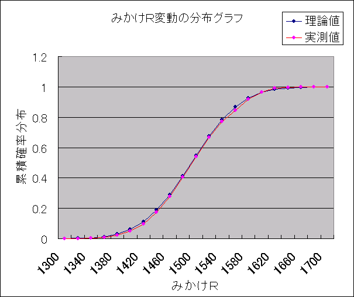
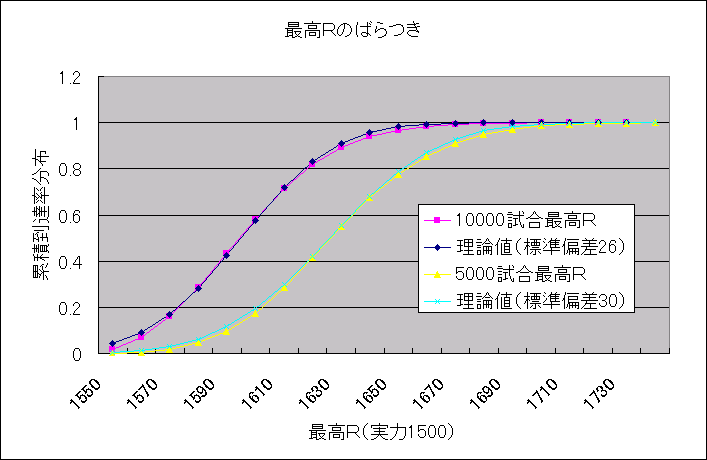

みかけＲ・最高Ｒ・安定Ｒの、実力計測精度の比較
概論：
ここでは、東風荘における「Ｒ値」のみかけの値がどのように分布しどのように変動するかを考察するとともに、「実力計測」の精度をいくつかの方法に対して検証する。
シミュレーション：
できすぎくん付属のシミュレータによって安定Ｒ1500、他家Ｒ1500、初期Ｒ1500、初期試合数400として10000000試合打たせ、みかけＲの変動分布を計算した（実測値）。
その分布と、正規分布に基づく平均1500、標準偏差60の分布（理論値）を比較したものが以下のグラフである。

シミュレータの計算方式（あるいは乱数の質？）の問題で、平均値（1500）までの分布が54％程度になっており、全体的に実測値が下方にずれていたので、理論値の平均値を7下方修正した。
その誤差を除けば、グラフはほぼ一致した。
同じ実力で打ち続ける場合のみかけＲは、正規分布に従って分布する。
また安定Ｒ1800、他家Ｒ1500の場合のみかけＲ変動が、安定Ｒ1500、他家Ｒ1500の場合のみかけＲ変動と同じ分布（右にＲ差である300だけずれた分布）になることが別のシミュレーション結果から知られている。
したがって、一般に同じ実力で打ち続ける場合のみかけＲは、正規分布に従って分布し、平均は安定Ｒ・標準偏差はおよそ60である、と結論できる。
ある人のみかけＲが「実力」より60程度上下することは頻繁に起こり得ることであるが、「実力」より120以上離れている確率はおよそ5％である（それでも10000試合のうち500試合程度はそういう状態になる）。
「実力」より155以上離れている確率になると1％以下になる。
ただしシミュレータによると、安定Ｒ1500の人が10000試合のうちに1500+155以上のＲに一度でも到達する確率となると40％にも達している。
「たった1％」であるとはいえ、上がる場合・落ちる場合は相当に激しい変動をすることがうかがえる。
（ただし以上は全て「新キャラ」ではない400試合以上のキャラに限る。「新キャラ」であればもっと大きくみかけＲがばらつくことが別のシミュレーションで確かめられている）
実力計測の精度比較（みかけＲと安定Ｒと最高Ｒ）：
「実力」なるものが一定値として存在するならば、それを測定する方法として、安定Ｒによる計測やみかけＲによる計測、最高Ｒによる計測、「観戦した印象による」計測など様々な計測方法が考えられる。
印象や主観による計測は論外として、安定Ｒ・みかけＲ・最高Ｒ（最低Ｒ）の3つの実力計測方法の精度を比較する。
まずはみかけＲと安定Ｒを比較しよう。
前項での結論から、みかけＲからの実力計測は少なくとも標準偏差60の誤差を持つ。
同じ順位分布（1〜4位25％）での安定Ｒの標準偏差は、σ（Ｒ）=1200×√｛1.25/ｎ｝（成績の偏りの論文参照）である。
1200×√｛1.25/n｝＜60となるｎを求めると、
400＜n/1.25
より、n＞500である。
つまり、500試合以上の安定Ｒを計測すれば、みかけＲを見て計測するよりも精度の高い実力計測が可能である。
また安定Ｒは試合数を増やすことで精度を無制限に高めることができるが、みかけＲの客観的計測は連続性を持つから、複数のＲ値を把握することが非常に困難であり（この前も今回も1800だった、と言っても、この前の好調分がまだ残存していれば計測できない）、10000試合追っても実力の計測が難しい（たった500試合で「残存」効果が消えるとしても、20点しかプロットできないが、同じ試合数の安定Ｒで計測すれば実力からのずれの標準偏差はわずか13.4まで減少する）。
次に、最高Ｒ・最低Ｒと安定Ｒはどうだろうか。
下のグラフは、実力1500の人が10000試合、5000試合打った場合の最高Ｒ値をプロットしたもので、各々理論値は標準偏差26、30で平均がそろうように取った正規分布である。

意外なことは、標準偏差としては比較的小さな値となっていることである。
もちろん安定Ｒの標準偏差13.4、19.0と比べると各々2倍程度のばらつきがあるが、思っていたよりは優秀であった(笑)。
ただ、最高Ｒになると標準偏差がばらつくだけでなく、上昇度合いの平均値も試合数に依存して変動するため、「実力」がどこかを推定することがさらに困難になる。
開始点のＲに強く依存することも大きなデメリットである。
実力計測のために比較を行うのだから、「開始点=実力」に取って開始することができない。
開始点のみかけＲのばらつきや、その後一度「実力」にみかけＲが到達するまでの試合数のばらつきなどの様々の外乱を内包するような形になる。
特に1000試合以下のような少ない試合数での比較にはこれらの影響が強く、適さないだろう。
それに対して安定Ｒ計測は、開始点のＲに一切影響を受けない。
以上から、次のように言える。
実力計測の手法として、最高ＲやみかけＲによる計測より、安定Ｒによる計測の方が精度が高い（2倍以上）。
Ｒシステムの改善手法：
もしもみかけＲに「実力計測」にふさわしい精度を与えたいならば、変動式を変更する必要がある。
現在の変動式は順位をｔとして
Ｒ変化＝10-4ｔ+（他家Ｒ-自分Ｒ）÷300
のように近似されるが、この変化自体を1/4にすれば、みかけＲの標準偏差はたぶん1/2（これは直感 笑）つまり30程度まで抑えることができ、これは2000試合分の安定Ｒに等しくなる。
さらに、このうち他家Ｒ補正部分はそのままに、10-4tの部分だけを減少させると、さらにばらつきが減る。
現行のＲ変動だと、実力2000の人が1850を切ったりすることも時々起きてしまうが、変動分を小さくすれば2000の人は絶不調でも1900までは落ちないくらいにはすることができる。
また実力1950しかないのに、まぐれで高いＲ（2100など）に到達することはほぼ不可能になる。
400試合で変動幅最小にするのではなく、2000試合程度までかけてゆっくり変動幅を下げていけば、違和感もない（個人的には現行の、初期段階の変動の激しさは問題だと思うが）。
せっかく実力の指標があるのに、それが単に麻雀のギャンブル性をそのまま反映しただけの指標であっては悲しい。
ただでさえ偶然性の高いゲームなのだから、実力計測の指標はなるべく客観的で精度の高いものを採用すべきように思う。